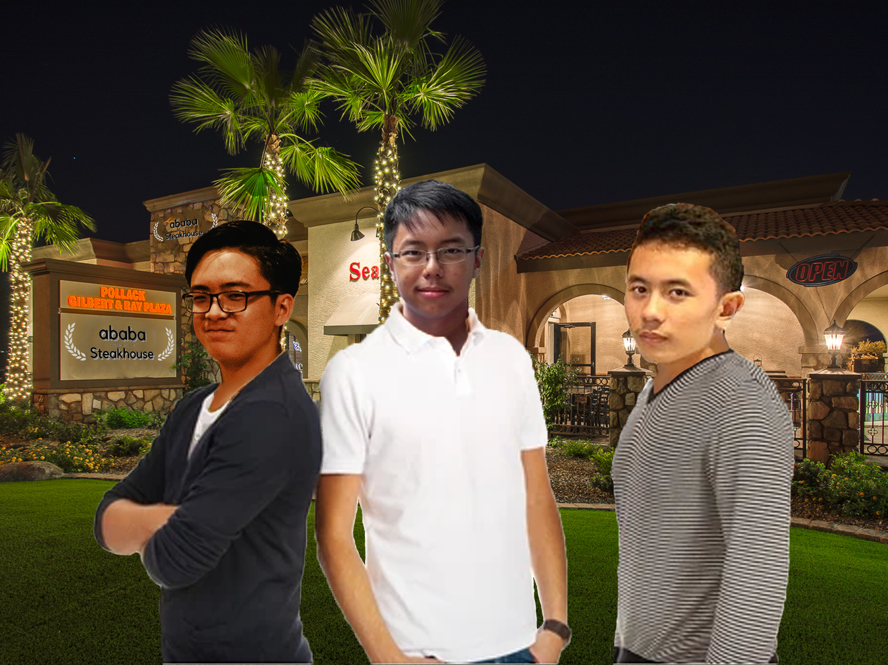

How ABABA Steakhouse was Created?
In 2001, Chef Juan Farell won the title as the Masterchef of
the first season's show in Indonesia. He was later offered a
contract to be the head chef of Gordon Ramsay's flagship
restaurant in Las Vegas. He declined the offer as he wanted
to open his own restaurant in Indonesia. He later went to
Japan to gain culinary inspiration and to learn about the
luxury of the local cattles of Japan's region of Kobe. In
there he meets with restaurateur Axell Mondrian and food
blogger Justin Kristian. He invited them to be a part of his
business in Indonesia, and they agreed. Eventually, the
three men established ABABA Steakhouse in its first place in
Jakarta.
ABABA Steakhouse's Gallery
2001
Masterchef Indonesia Winner Juan Farell was offered a contract
at Gordon Ramsay's Flagship Restaurant in Las Vegas
2002
After declining the offer, Chef Juan went to Japan to learn
about the art of fine dining in Kobe.
2003
Chef Juan meets with Justin and Axell for the first time and
they plan for ABABA for the first time.
2004
Chef Juan, Axell, and Justin signed a multimillion dollar
contract to create the ABABA brand with the first branch opening
in Jakarta.
2006
After two years of construction and issues, ABABA Steakhouse's
first branch in Senopati, South Jakarta is established.
